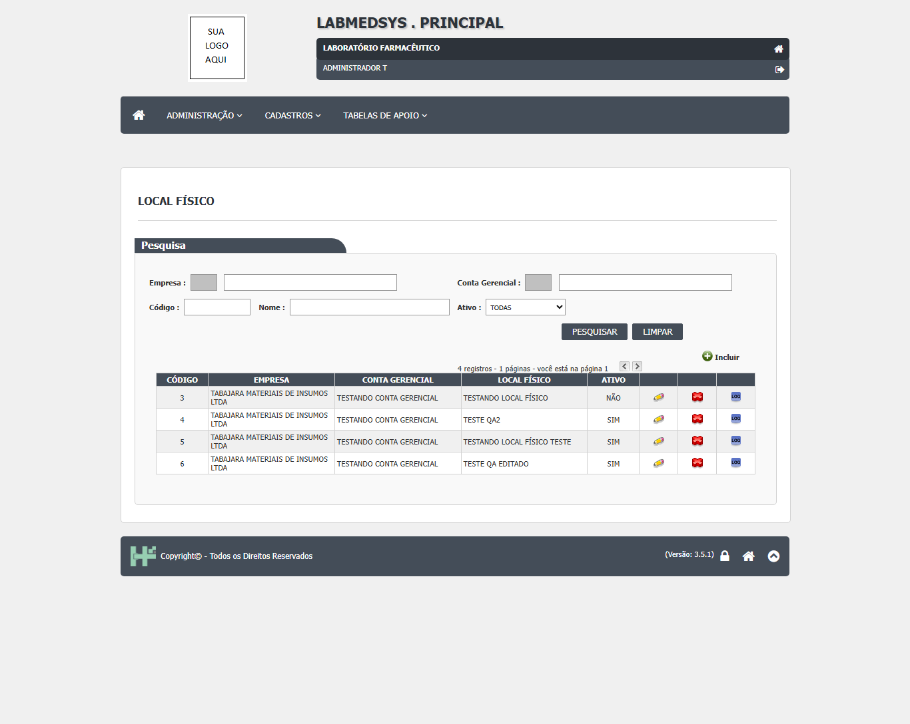
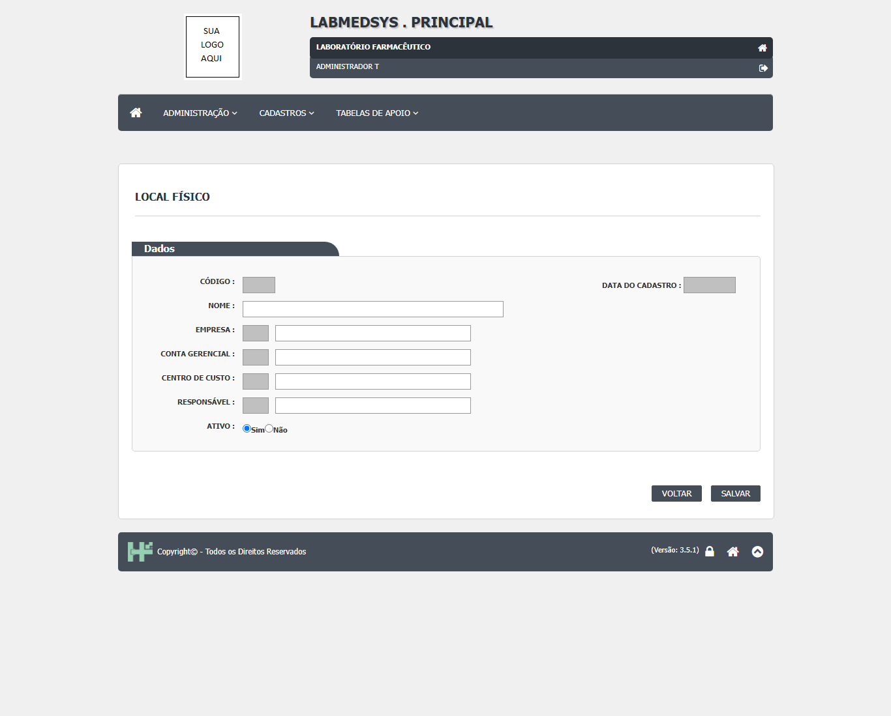
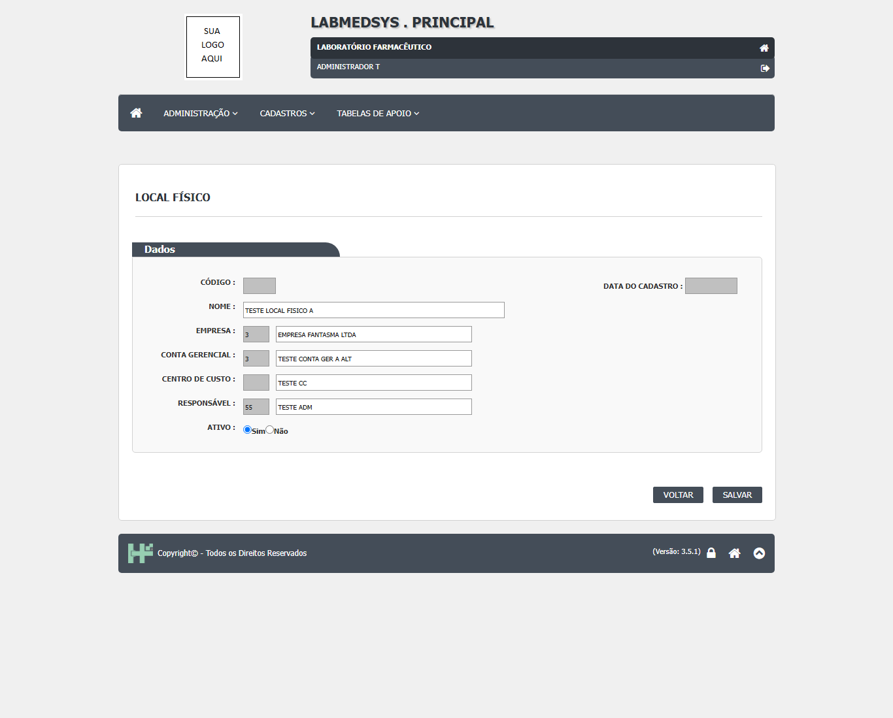
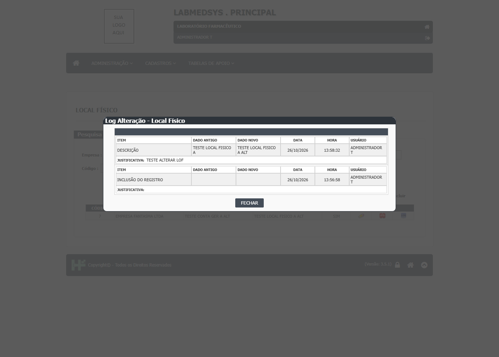
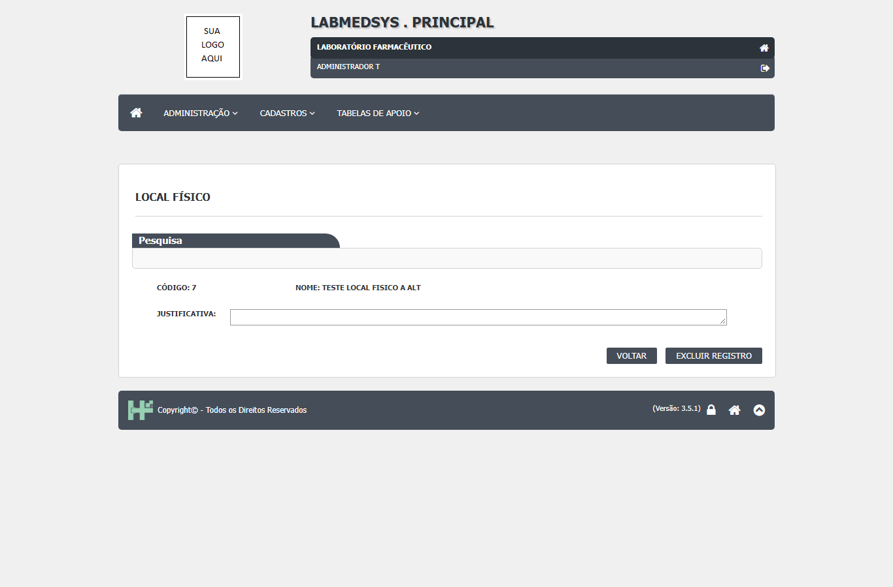
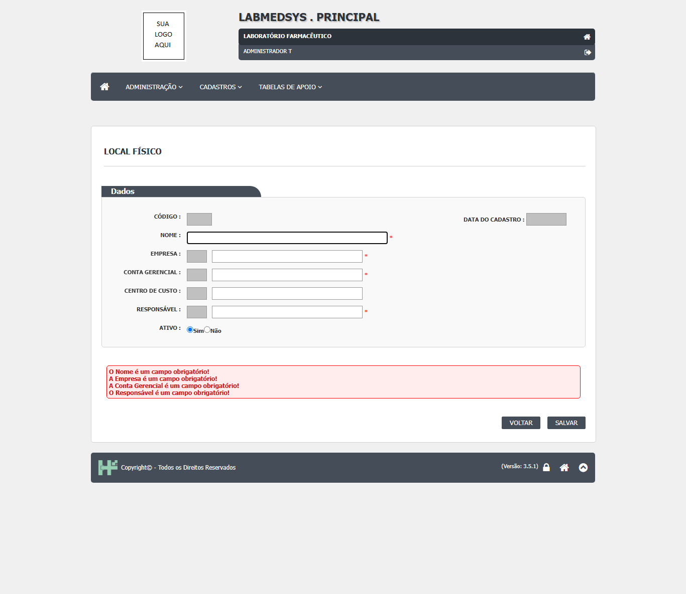
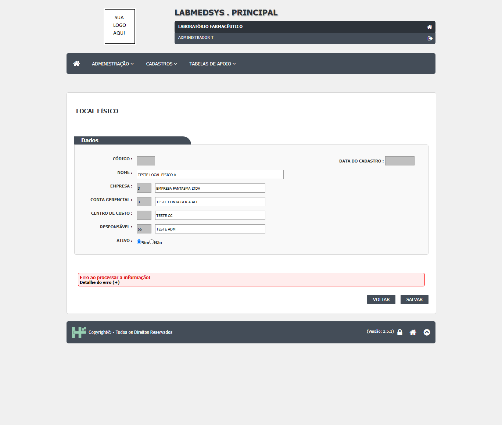
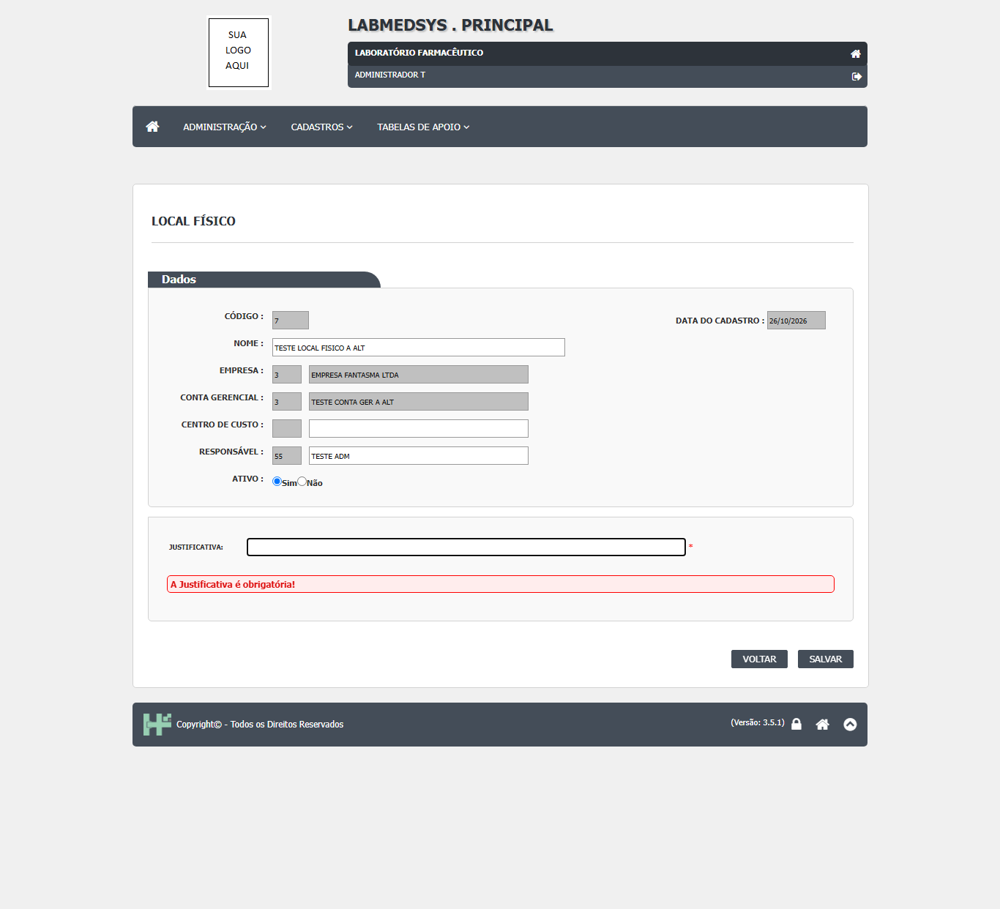
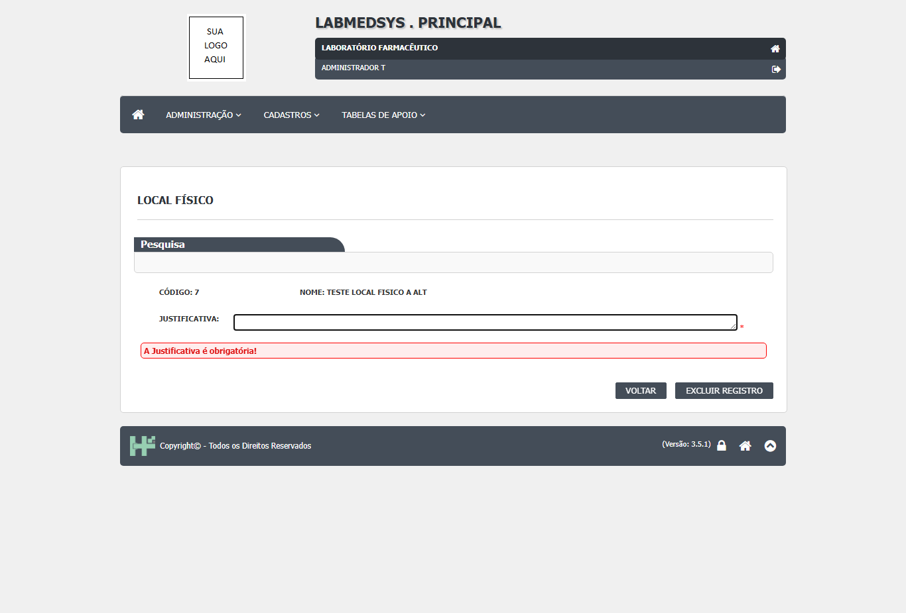

Para que serve
Cadastra os locais físicos onde ficam os bens da empresa (salas, prédios, almoxarifados no sentido patrimonial), cada um ligado a uma conta gerencial (tela 7) e, por ela, a uma empresa; com responsável (um usuário do sistema) e, se quiser, centro de custo. É a base do módulo Patrimônio. O código mostra duas telas no mesmo cadastro:
- Lista com pesquisa por empresa, conta gerencial, código, nome e situação, com paginação própria (Anterior e Próximo) e ordenação (local_fisico_lst.aspx:46-165; local_fisico_lst.aspx.cs:37-78).
- Formulário para incluir, alterar e consultar: nome, empresa, conta gerencial, centro de custo, responsável, situação e, na alteração, a justificativa (local_fisico_ed.aspx:49-140).
Não confundir com a Estrutura funcional (tela 9, árvore de setores usada em usuários, ambientes e equipamentos) nem com o Endereço do Estoque (almoxarifado, rua, coluna e andar). O Local Físico daqui é um cadastro patrimonial: nenhum módulo fabril o lê (busca por nome no repositório).
Fora do foco de Boas Práticas. O valor para a ANVISA é só o de qualquer cadastro mestre: identificação única e rastro de alteração. Esta tela não tem relatório: os botões Imprimir e Excel existem na página, mas ficam sempre escondidos (local_fisico_lst.aspx.cs:31-32, 55-56 e 173-189, comentados "vai entrar numa sprint futura").
Quem usa e em que etapa do processo
Quem usa
- Quem mantém o cadastro de bens da empresa: patrimônio, controladoria ou facilities (leitura da área, a validar).
- Quem consulta a lista e o histórico.
- Quem pode abrir, incluir, alterar, excluir, imprimir e ver o histórico está em "Quem pode usar (permissões)", mais abaixo.
Em que etapa do processo entra (tela 10 do menu Cadastros, módulo Principal)
- Pelo menu superior Cadastros › Local Físico, que abre a lista.
- Na lista, Pesquisar traz os locais (a lista não carrega sozinha); Incluir abre o formulário vazio e o lápis abre um local pelo endereço
local_fisico_ed.aspx?id_local_fisico=.
O que acontece depois (para onde o trabalho segue)
- SALVAR confere os obrigatórios antes de perguntar (diferente da maioria dos cadastros) e então pergunta "Confirma a inclusão do item?" ou "Confirma a alteração do item?". Com SIM grava e mostra "Inclusão realizada com sucesso!" ou "Alteração realizada com sucesso!"; o OK volta à lista.
- O local gravado passa a ser oferecido no módulo Patrimônio (bens, transferências, baixas, inventário).
Fonte: Resumo da tela e fluxo da tela (leitura do código e dos testes). O que for leitura da área precisa ser validado com a área.
Antes de começar (o que precisa existir)
- Entre no módulo Principal e abra Cadastros › Local Físico.
- Antes, cadastre a empresa (Pessoa jurídica, tipo Empresa), a conta gerencial (tela 7) e, se for usar, o centro de custo. O responsável é um usuário do sistema (local_fisico_ed.aspx.cs:77-110).
- Quem não tem a função desta tela ("LOCAL FÍSICO") é levado à página de acesso negado ao abrir a lista (local_fisico_lst.aspx.cs:27; ClassePaiLst.cs:65). Incluir, Editar, Excluir e Ver Log só aparecem para quem tem a ação correspondente (ClassePaiLst.cs:111-255).
Passo a passo
Situação das imagens (14/11/2026): imagens reaproveitadas dos testes de 26/10/2026 (rodada 3), cada uma conferida contra o texto. Sem imagem: o aviso de sucesso, a inativação, a busca de Empresa e Conta Gerencial por sugestão, a recusa do nome repetido com a frase correta, o relatório (a tela não tem).
Pesquisar
- Abra a lista (vem vazia). Preencha, se quiser, Empresa e Conta Gerencial (digite pelo menos duas letras e escolha na sugestão), Código (só números), Nome e Ativo, e clique em Pesquisar (local_fisico_lst.aspx:46-95).
- A grade mostra Código, Empresa, Conta Gerencial, Local Físico e Ativo, com o total de registros, as páginas e os botões Anterior e Próximo (local_fisico_lst.aspx:119-138; local_fisico_lst.aspx.cs:37-48 e 445-460).

Figura 1: A lista de Local Físico depois de Pesquisar: filtros Empresa, Conta Gerencial, Código, Nome e Ativo, botões PESQUISAR, LIMPAR e Incluir, o total de registros e a grade com os ícones Editar, Excluir e LOG.
- Limpar esvazia filtros e grade (local_fisico_lst.aspx.cs:192-226).
Incluir
- Clique em Incluir.

Figura 2: O formulário de inclusão de Local Físico aberto, vazio: Nome, Empresa, Conta Gerencial, Centro de Custo, Responsável e Ativo.
- Preencha Nome, Empresa, Conta Gerencial e Responsável (obrigatórios; escolha cada um na sugestão, não só digitando) e, se quiser, Centro de Custo. Ativo vem como Sim (local_fisico_ed.aspx:49-123).

Figura 3: O formulário preenchido (Nome, Empresa, Conta Gerencial, Centro de Custo e Responsável), antes de salvar.
- Clique em SALVAR. Se faltar um obrigatório, a mensagem aparece antes da confirmação. Depois responda SIM a "Confirma a inclusão do item?" (local_fisico_ed.aspx.cs:122-141).
- Se já existir outro local com o mesmo nome na mesma conta gerencial, aparece "Já existe um Local Físico com este Nome!" (ContaGerencial.cs:48-59, biblioteca).
Alterar ou inativar
- Clique no lápis. A empresa e a conta gerencial ficam travadas. Mude o que precisar e escreva a Justificativa (obrigatória na alteração) (local_fisico_ed.aspx.cs:73-117).
- Clique em SALVAR e confirme. O histórico guarda o valor antigo e o novo de Situação, Nome, Conta Gerencial, Responsável e Centro de Custo (local_fisico_ed.aspx.cs:283-392).

Figura 4: A janela "Log Alteração - Local Físico": a mudança de DESCRIÇÃO (dado antigo e novo) com a justificativa e a linha "INCLUSÃO DO REGISTRO".
- Um local inativo abre travado, com só Ativo e Justificativa liberados (local_fisico_ed.aspx.cs:56-71).
Excluir
- Na lista, clique no ícone de exclusão. A tela troca para o painel de exclusão, com o código, o nome e a Justificativa (local_fisico_lst.aspx.cs:86-94; local_fisico_lst.aspx:192-217).

Figura 5: O painel de exclusão: código, nome, campo Justificativa e os botões VOLTAR e EXCLUIR REGISTRO.
- Escreva a justificativa, clique em EXCLUIR e responda SIM. Se o módulo Patrimônio estiver ativo, o sistema confere se há bens, transferências, baixas, reavaliações, depreciações, amortizações ou inventários usando o local e recusa dizendo qual (local_fisico_lst.aspx.cs:296-381).
- Se o módulo Patrimônio não estiver ativo, o local é excluído sem essa conferência (local_fisico_lst.aspx.cs:303-307).
Ver o histórico
- O ícone LOG abre o histórico do local (local_fisico_lst.aspx.cs:101-109).
- Imprimir e Excel não aparecem nesta tela.
O que acontece ao confirmar ou salvar
- SALVAR confere os obrigatórios antes de perguntar (diferente da maioria dos cadastros) e então pergunta "Confirma a inclusão do item?" ou "Confirma a alteração do item?". Com SIM grava e mostra "Inclusão realizada com sucesso!" ou "Alteração realizada com sucesso!"; o OK volta à lista (local_fisico_ed.aspx.cs:122-162, 203-225 e 197-201).
- O local gravado passa a ser oferecido no módulo Patrimônio (bens, transferências, baixas, inventário) (local_fisico_lst.aspx.cs:352-381).
O que o sistema recusa
- "O Nome é um campo obrigatório!" / "A Empresa é um campo obrigatório!" / "A Conta Gerencial é um campo obrigatório!" / "O Responsável é um campo obrigatório!" / "A Situação é um campo obrigatório!": Campo em branco (local_fisico_ed.aspx:52, 67, 82, 110 e 121)
- "A Justificativa é obrigatória!": Alteração ou exclusão sem justificativa (local_fisico_ed.aspx:137; local_fisico_lst.aspx:207)
- "Já existe um Local Físico com este Nome!": Outro local de mesmo nome na mesma conta, na inclusão (ContaGerencial.cs:55 (biblioteca))
- "Erro ao processar a informação!" com o texto do erro: Qualquer falha ao gravar (por exemplo, responsável digitado e não escolhido) (local_fisico_ed.aspx.cs:219-224)
- "Ocorreu um erro ao atualizar o Local Fisico.": Qualquer falha na alteração, inclusive nome repetido (ContaGerencial.cs:91-94 (biblioteca))
- "A pesquisa não retornou nenhum resultado.": Pesquisa sem linhas (local_fisico_lst.aspx.cs:64)
- "Este Local Físico não pode ser excluído pois está sendo usado no cadastro de bens / na Transferência / na Baixa / na Reavaliação / na Depreciação / na Amortização / no Inventário no sistema Patrimônio.": Local usado no Patrimônio, com o módulo ativo (local_fisico_lst.aspx.cs:355-381)

Figura 6: Salvar com tudo em branco: mensagens vermelhas de campo obrigatório para Nome, Empresa, Conta Gerencial e Responsável.

Figura 7: Salvar com nome já existente: a tela mostra só "Erro ao processar a informação!" com o link "Detalhe do erro (+)", sem dizer que o nome já existe.

Figura 8: Alterar sem Justificativa: mensagem vermelha "A Justificativa é obrigatória!" sobre o campo Justificativa.

Figura 9: Excluir sem Justificativa: o painel de exclusão mostra "A Justificativa é obrigatória!".
Quem pode usar (permissões)
- A lista usa a função de tela "LOCAL FÍSICO" (local_fisico_lst.aspx.cs:27). A base das listas confere a função logo no início e leva quem não a tem à página de acesso negado (ClassePaiLst.cs:65; BaseController.cs:26-31). Incluir, Editar, Consultar, Excluir e Ver Log dependem de cada ação (ClassePaiLst.cs:111-255).
- O formulário usa a mesma função (local_fisico_ed.aspx.cs:25). A base do formulário só calcula as ações e não bloqueia a entrada (ClassePaiEd.cs:71-156). Esta tela trava o formulário e esconde o SALVAR para quem não tem Alterar, inclusive no local novo (local_fisico_ed.aspx.cs:56-60): quem só tem Incluir veria o formulário novo sem SALVAR (inferência a confirmar). O formulário só confere se há sessão aberta (local_fisico_ed.aspx.cs:29-32).
- Não há página de relatório, portanto não há relatório sem conferência.
- O detalhe da conferência de acesso está na seção "Segurança e acesso" desta tela.
Cuidados e falhas conhecidas
- Nenhum. A tela não foi testada. Nenhum DV-PRI registrado tem esta tela como alvo (
defeitos/defeitos-completo.json, campotela). - DV-PRI-009 (Alta), visto em outro cadastro (Excluir Ambiente e Equipamento sem justificativa). Nesta tela: Esta tela pede justificativa na exclusão (local_fisico_lst.aspx:204-207). Situação aqui: Não se aplica pelo código.
- DV-PRI-010 (Média), visto em outro cadastro (Salvar equipamento sem a categoria dá "Input string was not in a correct format" e a tela fica parada). Nesta tela: Padrão parecido: empresa ou conta só digitadas deixam o código vazio e a gravação falha (local_fisico_ed.aspx.cs:229-231); para o responsável o script limpa o texto (local_fisico.js:60-71). Situação aqui: A confirmar no teste.
- DV-PRI-011 (Média), visto em outro cadastro (Recusa de exclusão com mensagem genérica). Nesta tela: Aqui a mensagem diz qual cadastro do Patrimônio impede (local_fisico_lst.aspx.cs:355-381). Situação aqui: Não se aplica pelo código.
- DV-PRI-014 (Alta), visto em outro cadastro (Histórico de excluído não pode ser consultado). Nesta tela: Lista só com locais fora da lixeira (PessoaJuridicaRepository.cs:285). Situação aqui: A confirmar no teste.
- DV-PRI-008 (Baixa), visto em outro cadastro (Pesquisa não ignora acentos). Nesta tela: Pesquisa com Contains no banco (PessoaJuridicaRepository.cs:303-306). Situação aqui: A confirmar no teste.
- DV-PRI-025 (Alta), visto em outro cadastro (Telas de edição abrem pelo endereço sem permissão). Nesta tela: O formulário não bloqueia a entrada (ver segurança). Situação aqui: A confirmar no teste.
- (a confirmar no teste) Nome repetido na alteração não é barrado e a mensagem vira genérica: a conferência olha o registro antes da troca e qualquer erro vira "Ocorreu um erro ao atualizar o Local Fisico.".
- (a confirmar no teste) Empresa e conta gerencial só digitadas dão erro ao gravar. O script do navegador só limpa o campo de empresa ou de conta quando o texto muda depois de uma escolha na sugestão; quem digita sem nunca escolher deixa o código vazio, a obrigatoriedade (que olha o texto) passa e a gravação falha com "Erro ao processar a informação!" e o texto "Id da Conta Gerencial não informado.".
- (a confirmar no teste) A exclusão só confere o Patrimônio se o módulo estiver ativo. Com o módulo desligado, o local é excluído sem conferência, e a tabela de bens não tem chave com esta tabela neste banco (inferência).
- (a confirmar no teste) Imprimir e Excel não existem de fato: botões escondidos e lógica comentada. O inventário já anotava "Sem relatório".
- (a confirmar no teste) O formulário não lê
consultar=1: a lupa e o lápis abrem o mesmo formulário; quem tem Alterar edita mesmo clicando em Consultar. - (a confirmar no teste) Nome só com letras, números e espaço: não aceita hífen, ponto, vírgula nem barra.
- (a confirmar no teste) Pesquisa de nome com 100 caracteres, cadastro com 50: só diferença de tamanho, sem efeito.
- (a confirmar no teste) A trava SALVAR para quem não tem Alterar vale também no local novo: quem só tem Incluir não consegue salvar.
- (a confirmar no teste) O responsável não é protegido por chave no banco: o código do usuário é guardado sem chave, então um usuário pode ser removido sem aviso e o local fica com um responsável inexistente (inferência).
- (a confirmar no teste) Código do local no endereço sem tratamento: um valor que não seja número gera erro técnico.
- As imagens deste manual vêm do teste de 26/10/2026 (rodada 3). Os resultados desse teste ainda precisam ser conferidos com a seção "Casos de teste" desta tela, que pode ter sido escrita antes dele.
Ícones e botões da lista
Inclui também os botões do formulário.
| Ícone ou botão | O que faz | Quando aparece |
|---|---|---|
| Pesquisar | Procura com os filtros, ordenando pelo código | Na lista |
| Limpar | Esvazia filtros e grade | Na lista |
| Incluir | Abre o formulário vazio | Para quem tem a ação Incluir |
| Anterior e Próximo | Navegam pelas páginas | Depois de uma pesquisa com resultado |
| Imprimir e Excel | Os dois botões são escondidos em todo carregamento; a lógica de relatório está comentada | Nunca aparecem |
| Lápis (Editar) e lupa (Consultar) | Abrem o formulário; o endereço da lupa leva consultar=1, que o formulário não lê |
Conforme as ações do perfil |
| Excluir | Abre o painel de exclusão com justificativa | Para quem tem Excluir |
| EXCLUIR e VOLTAR (painel) | EXCLUIR pede confirmação e exclui; VOLTAR sai | No painel de exclusão |
| LOG | Abre o histórico | Para quem tem Consultar log |
| SALVAR | Confere os obrigatórios, pede confirmação e grava | No formulário |
| VOLTAR | Volta à lista sem gravar | No formulário |
Campos da tela
Caminhos das fontes na seção Resumo da tela. "Sim (servidor)" quando o servidor também confere; "Só na tela" quando só o navegador confere.
Lista
| Campo na tela | Tipo | Obrigatório | Regra, limite ou valores possíveis | Fonte |
|---|---|---|---|---|
| Empresa | Texto com sugestão | Não | Pessoas jurídicas do tipo Empresa; mínimo de 2 letras | local_fisico_lst.aspx:46-55; wsAutoComplete.asmx.cs:93-104 |
| Conta Gerencial | Texto com sugestão | Não | Contas da empresa escolhida; mínimo de 2 letras | local_fisico_lst.aspx:57-66; wsAutoComplete.asmx.cs:106-120 |
| Código | Texto | Não | Só dígitos; código exato | local_fisico_lst.aspx:70-73; PessoaJuridicaRepository.cs:298-302 |
| Nome | Texto | Não | Até 100 caracteres na pesquisa (o cadastro aceita 50); procura o texto dentro do nome; maiúsculas | local_fisico_lst.aspx:75-76; local_fisico_lst.aspx.cs:167; PessoaJuridicaRepository.cs:303-306 |
| Ativo | Lista | Não | TODAS (padrão), SIM, NÃO | local_fisico_lst.aspx:80-84 |
| Grade | Tabela | Não | Código, Empresa, Conta Gerencial, Local Físico, Ativo; 10 linhas por página; colunas Editar, Consultar, Excluir e VerLog conforme as permissões | local_fisico_lst.aspx:119-165; PessoaJuridicaRepository.cs:279 |
Formulário
| Campo na tela | Tipo | Obrigatório | Regra, limite ou valores possíveis | Fonte |
|---|---|---|---|---|
| Código | Texto travado | Não se aplica | Gerado pelo banco | local_fisico_ed.aspx:41-43 |
| Data do Cadastro | Texto travado | Não se aplica | Data de criação | local_fisico_ed.aspx:45-46; local_fisico_ed.aspx.cs:113 |
| Nome | Texto | Sim | Até 50 caracteres (igual ao banco); só letras, números e espaço (filtro do navegador); "O Nome é um campo obrigatório!"; gravado em maiúsculas | local_fisico_ed.aspx:49-53; TBL_LOCAL_FISICO.sql:3 |
| Empresa | Texto com sugestão | Sim | Pessoa jurídica do tipo Empresa; "A Empresa é um campo obrigatório!"; travada na alteração | local_fisico_ed.aspx:57-69; local_fisico_ed.aspx.cs:80-85 |
| Conta Gerencial | Texto com sugestão | Sim | Contas da empresa escolhida; "A Conta Gerencial é um campo obrigatório!"; travada na alteração | local_fisico_ed.aspx:72-85; local_fisico_ed.aspx.cs:87-91 |
| Centro de Custo | Texto com sugestão | Não | Centros de custo cadastrados | local_fisico_ed.aspx:87-98; local_fisico_ed.aspx.cs:103-110 |
| Responsável | Texto com sugestão | Sim | Usuário do sistema; "O Responsável é um campo obrigatório!" | local_fisico_ed.aspx:100-113; local_fisico_ed.aspx.cs:96-101 |
| Ativo | Sim / Não | Sim | Padrão Sim; "A Situação é um campo obrigatório!" | local_fisico_ed.aspx:115-123 |
| Justificativa | Texto | Sim, só ao alterar | Até 255 caracteres; o painel só aparece para um local existente | local_fisico_ed.aspx:129-140; local_fisico_ed.aspx.cs:72-74 e 114-116 |
Botões e ações
| Botão ou ação | Quando aparece | O que faz | Fonte |
|---|---|---|---|
| Pesquisar | Na lista | Procura com os filtros, ordenando pelo código | local_fisico_lst.aspx.cs:160-190 |
| Limpar | Na lista | Esvazia filtros e grade | local_fisico_lst.aspx.cs:192-226 |
| Incluir | Para quem tem a ação Incluir | Abre o formulário vazio | local_fisico_lst.aspx.cs:155-158 |
| Anterior e Próximo | Depois de uma pesquisa com resultado | Navegam pelas páginas | local_fisico_lst.aspx.cs:445-460 |
| Imprimir e Excel | Nunca aparecem | Os dois botões são escondidos em todo carregamento; a lógica de relatório está comentada | local_fisico_lst.aspx.cs:31-32, 55-56, 173-189 e 228-278 |
| Lápis (Editar) e lupa (Consultar) | Conforme as ações do perfil | Abrem o formulário; o endereço da lupa leva consultar=1, que o formulário não lê |
local_fisico_lst.aspx.cs:95-100 |
| Excluir | Para quem tem Excluir | Abre o painel de exclusão com justificativa | local_fisico_lst.aspx.cs:86-94 |
| EXCLUIR e VOLTAR (painel) | No painel de exclusão | EXCLUIR pede confirmação e exclui; VOLTAR sai | local_fisico_lst.aspx.cs:461-482 |
| LOG | Para quem tem Consultar log | Abre o histórico | local_fisico_lst.aspx.cs:101-109 |
| SALVAR | No formulário | Confere os obrigatórios, pede confirmação e grava | local_fisico_ed.aspx.cs:122-141 |
| VOLTAR | No formulário | Volta à lista sem gravar | local_fisico_ed.aspx.cs:176-179 |
Mensagens do sistema
Nenhuma mensagem desta tela apareceu em teste. Todas vêm do texto do código.
| Mensagem (texto exato do código) | Quando aparece | Fonte |
|---|---|---|
| "Confirma a inclusão do item?" / "Confirma a alteração do item?" | Depois de conferir os obrigatórios | local_fisico_ed.aspx.cs:152 e 156 |
| "Inclusão realizada com sucesso!" / "Alteração realizada com sucesso!" | Depois de gravar | local_fisico_ed.aspx.cs:210 e 215 |
| "O Nome é um campo obrigatório!" / "A Empresa é um campo obrigatório!" / "A Conta Gerencial é um campo obrigatório!" / "O Responsável é um campo obrigatório!" / "A Situação é um campo obrigatório!" | Campo em branco | local_fisico_ed.aspx:52, 67, 82, 110 e 121 |
| "A Justificativa é obrigatória!" | Alteração ou exclusão sem justificativa | local_fisico_ed.aspx:137; local_fisico_lst.aspx:207 |
| "Já existe um Local Físico com este Nome!" | Outro local de mesmo nome na mesma conta, na inclusão | ContaGerencial.cs:55 (biblioteca) |
| "Erro ao processar a informação!" com o texto do erro | Qualquer falha ao gravar (por exemplo, responsável digitado e não escolhido) | local_fisico_ed.aspx.cs:219-224 |
| "Ocorreu um erro ao atualizar o Local Fisico." | Qualquer falha na alteração, inclusive nome repetido | ContaGerencial.cs:91-94 (biblioteca) |
| "A pesquisa não retornou nenhum resultado." | Pesquisa sem linhas | local_fisico_lst.aspx.cs:64 |
| "Confirma a exclusão do item?" | Ao clicar em EXCLUIR no painel | local_fisico_lst.aspx.cs:474-482 |
| "Exclusão realizada com sucesso!" | Depois de excluir | local_fisico_lst.aspx.cs:322 |
| "Este Local Físico não pode ser excluído pois está sendo usado no cadastro de bens / na Transferência / na Baixa / na Reavaliação / na Depreciação / na Amortização / no Inventário no sistema Patrimônio." | Local usado no Patrimônio, com o módulo ativo | local_fisico_lst.aspx.cs:355-381 |
Quem pode fazer o quê
Ainda não levantado para esta tela
O quadro "Quem pode fazer o quê" é preenchido a partir de testes de tela por perfil (nível, área e etapa do registro), nunca por suposição. Esta tela ainda não passou por esse levantamento.